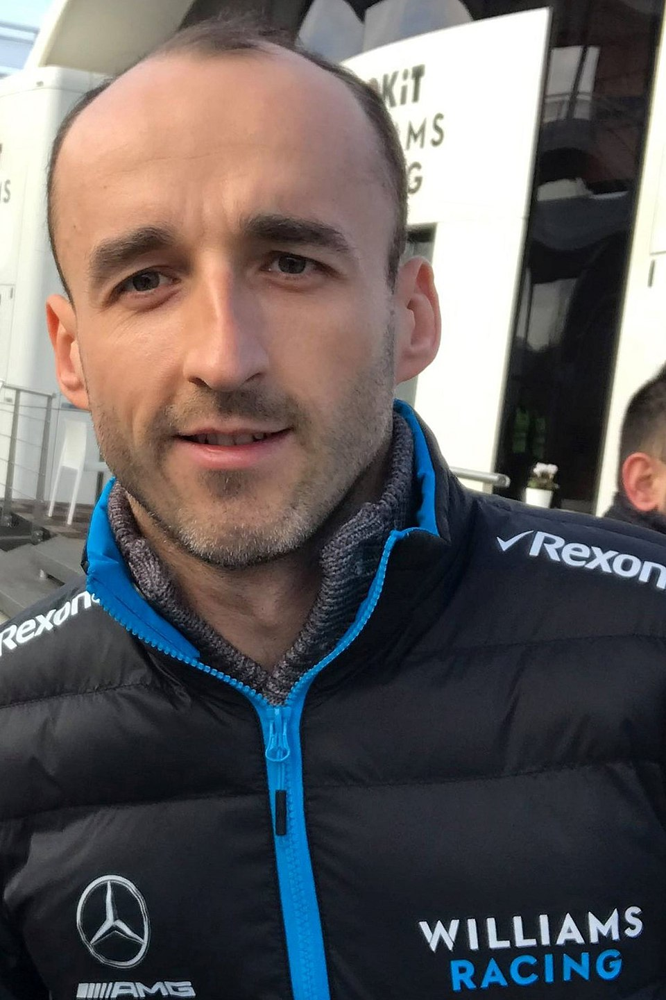
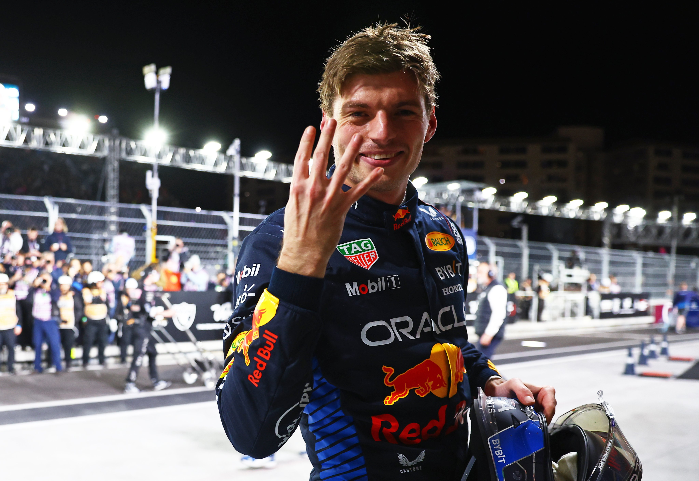
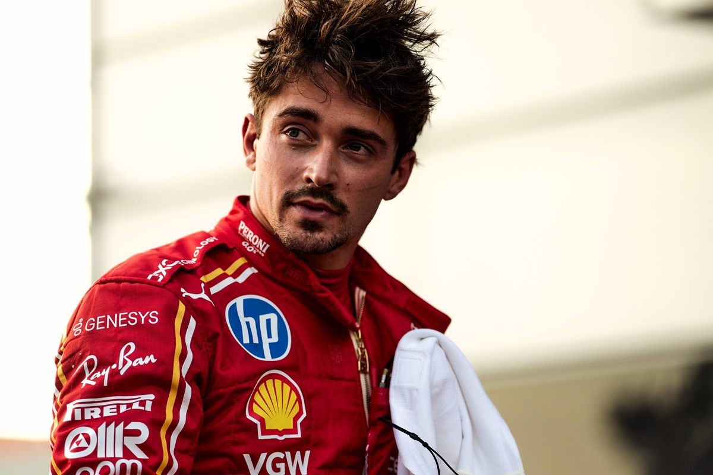

Robert Kubica

Robert Józef Kubica - polski kierowca wyścigowy i rajdowy. Mistrz Formuły Renault 3.5 z 2005. W latach 2006-2009 był kierowcą zespołu BMW Sauber, rozpoczynając swoją karierę w Formule 1 od roli kierowcy testowego.
Max Verstappen

Max Emilian Verstappen - holenderski kierowca wyścigowy, czterokrotny mistrz świata Formuły 1 w sezonach 2021, 2022, 2023, 2024. W wieku 17 lat i 166 dni został najmłodszym kierowcą, który uczestniczył w wyścigu Formuły 1. Jego debiutanckim wyścigiem było Grand Prix Australii 2015 dla Scuderii Toro Rosso.
Charles Leclerc

Charles Marc Hervé Percival Leclerc - monakijski kierowca wyścigowy, startujący w mistrzostwach świata Formuły 1 od sezonu 2018. Od sezonu 2019 kierowca zespołu Scuderia Ferrari, zwycięzca ośmiu wyścigów Formuły 1. Wicemistrz świata Formuły 1, a także drugi wicemistrz tej serii, mistrz Formuły 2, mistrz serii GP3. Wikipedia